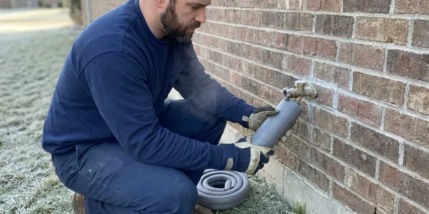

Residential Plumbing Service in Green Bay, WI
Homeowners in Green Bay, WI count on HKV Plumbing for prompt and professional residential plumbing service. We ensure your home's plumbing systems run smoothly and efficiently.
- Same-Day Home Plumbing Service
- Local Green Bay Experts
- Quality Workmanship
- Fast, Reliable Service

Looking for Residential Plumbing Service in Green Bay, WI?
Our team is ready to deliver top-notch plumbing solutions right to your doorstep.
Your Go-To for Residential Plumbing Service in Green Bay, WI
At HKV Plumbing, we specialize in residential plumbing service, offering reliable solutions for all types of homes in Green Bay, WI. From routine maintenance to emergency repairs, our team delivers quality service you can count on. We focus on durable repairs that stand up to local conditions.
Our expertise includes:
- Slab leak detection, rerouting and whole-home PEX repiping
- Water heater, softener, pressure regulator and shutoff valve service
- Water heater installation and maintenance.

Additional Plumbing Maintenance Services in Green Bay, WI
Our maintenance and specialty plumbing services in Green Bay, WI catch small problems before they become emergencies.


Customers
Why Choose HKV Plumbing for Residential Plumbing Service in Green Bay, WI?
Homeowners choose us because we show up when promised, explain the problem clearly and charge what we quoted. We treat your home like our own.
- Workmanship Warranty, Our repairs come with a written warranty on parts and labor.
- Clear Communication, We explain all options and costs upfront, so you understand the scope of work before we begin any residential plumbing service.
- Local Knowledge, Our team understands the plumbing challenges in Green Bay, like soil movement under foundations and hard water buildup.
Citywide Coverage
HKV Plumbing is proud to serve every neighborhood and community within Green Bay for all residential plumbing service needs. Whether you are in an older district or a new development, our local teams are ready to respond. We understand the varied housing stock in Green Bay and tailor our approach accordingly.
Experienced Team
Our plumbing technicians are seasoned professionals with deep experience in residential plumbing service for Wisconsin homes. They are skilled in diagnosing complex issues, from pipe corrosion caused by water chemistry to foundation leaks. Continuous training keeps them current with the best practices.
Safety-First Approach
When HKV Plumbing performs residential plumbing service, we prioritize the safety of your home and family. We use safe practices and durable materials, so all installations and repairs meet or exceed industry standards. Rest assured that all work is performed to the highest professional and regulatory standards in Green Bay, WI.
Trusted Certified Green Bay Plumbing Services Professionals
At HKV Plumbing, we take pride in providing licensed, certified plumbing services throughout Green Bay, WI. Backed by recognized industry credentials, our experienced plumbers combine technical skill with genuine customer care. Whether it is repair, installation, or maintenance, we follow strict safety and quality standards to deliver lasting results you can trust.
Call Us Now PHCC Plumbing Contractor Recognition
PHCC Plumbing Contractor Recognition Better Business Bureau (BBB) Accreditation
Better Business Bureau (BBB) Accreditation Angi Certified Pro
Angi Certified Pro ISO 9001 Quality Management Certification
ISO 9001 Quality Management CertificationDependable Residential Plumbing Service Solutions in Green Bay, WI
Pipe Repair and Repiping in Green Bay, WI
Older homes often have galvanized or polybutylene pipes prone to corrosion and leaks. Wisconsin has a lot of older housing, and many homes still have cast iron drains, galvanized supply lines or clay sewer laterals. Our residential plumbing service provides expert pipe repair for isolated issues or full home repiping using durable materials like PEX or copper. We assess your existing system, recommend the best long-term solution and complete the repipe with minimal disruption, ensuring a reliable and safe water supply for decades to come.

Drain Cleaning and Clog Removal in Green Bay
Slow drains and persistent clogs are common residential plumbing service calls. We use professional-grade drain snakes, hydro-jetting equipment and enzymatic cleaners to clear blockages from kitchen sinks, bathroom drains and main sewer lines. Our methods reliably remove grease buildup, hair, soap scum and tree roots that often get into older piping systems in Green Bay, restoring full flow without damaging your pipes.
Residential Plumbing Costs in Green Bay, WI
Simple repairs like a faucet cartridge or toilet rebuild often run $150 to $350. Water heater replacements usually range from $1,400 to $3,000, and whole-home repipes often cost $5,000 to $15,000 depending on size. We give you a written flat price before starting. Many jobs also come with options so you can choose what fits your budget.
Emergency Plumbing Repair in Green Bay
When a pipe bursts or a drain backs up unexpectedly, you need fast help. Our emergency residential plumbing service in Green Bay is available to address urgent issues like severe leaks, overflowing toilets or complete loss of water. We arrive quickly, assess the situation and make effective repairs to minimize water damage and restore function. Don't let a plumbing emergency escalate, call us for rapid response.
Repiping and Pipe Replacement in Green Bay
Homes with failing polybutylene, corroded galvanized or pinhole-prone copper often need a repipe. We replace supply lines with PEX or copper, routing new lines through the attic and walls to avoid breaking the slab. Most homes are repiped in two to four days with water restored each night. We patch the drywall openings so the house is ready for paint.
Water Softener & Filtration in Green Bay
Water softeners are a common feature in many Wisconsin homes, helping protect water heaters, fixtures and appliances from scale. Hard water leads to mineral buildup in pipes and appliances. HKV Plumbing installs and services high-quality water softeners and whole-home filtration systems from trusted brands like Kinetico and Pelican Water. These systems protect your plumbing, extend the life of appliances and improve the taste and quality of your tap water. We assess your home's water hardness and recommend the most effective solution, delivering strong performance and efficiency for your needs.
Pressure Regulators and Shutoff Valves in Green Bay, WI
Water pressure above 80 psi stresses pipes, fixtures and appliance hoses. We test your pressure and install or replace pressure reducing valves set to a safe range. We also replace seized main shutoffs and angle stops so you can turn off water quickly in an emergency. These upgrades protect the rest of your plumbing system.

Pipe Repair & Repiping in Green Bay, WI
Aging pipes and shifting soil can lead to corroded, leaking or burst pipes. We offer complete pipe repair services, from patching small leaks to full-scale repiping with durable materials like PEX or copper. Whether you have galvanized pipes past their prime or a sudden pipe rupture from a freeze, our team responds fast. We ensure all new piping meets current building codes, providing a long-lasting solution that improves water pressure and reduces the risk of future leaks in your home.
Residential Plumbing Service Near Me in Green Bay, WI
When you search for a residential plumber near me, HKV Plumbing has licensed plumbers working in Green Bay every day. Our trucks are stocked with the parts most homes need. That means quicker repairs and fewer return trips.
We know the homes, water and soil conditions in Green Bay because we work here every day. That local knowledge helps us diagnose problems quickly. You get an accurate fix and a fair price.
HKV Plumbing at a Glance
- Licensed and insured plumbers serving Green Bay, WI
- 24/7 emergency service with same-day scheduling
- Upfront, flat-rate pricing before work begins
- 4.8-star rated by 448+ Wisconsin customers
Green Bay Map
Green Bay Information
- Population
- 105,744
- Area codes
- 920/414/608
- Service area
- Green Bay and communities within 40 miles
- Nearby
- Appleton, Oshkosh, Sheboygan, Wausau
Residential plumbing service is essential for homes in Green Bay, WI because local weather can affect pipe integrity, and shifting soil can turn an unnoticed leak into a structural problem.
Expert Services
Trust our professionals for reliable HKV Plumbing solutions in Green Bay, WI.
Our Specialized Plumbing Services in Green Bay, WI
At HKV Plumbing, we provide a complete range of plumbing services across Green Bay, WI. From leak detection to full system installations, our team ensures fast, precise, and affordable service for both residential and commercial properties. Explore our core services below:


How Our Residential Plumbing Service Visit Works in Green Bay, WI
From your first call to the completion of the job, we deliver a smooth and professional experience for every residential plumbing service in Green Bay.
Request a Quote
Contact us at (414) 432-4641 or fill out our online form to schedule your residential plumbing service. We'll gather basic details about your plumbing issue.
On-Site Assessment
A licensed HKV Plumbing plumber will arrive at your Green Bay home to conduct a thorough inspection. We accurately diagnose the problem using modern tools.
Transparent Pricing
You'll receive a clear, upfront estimate for the required residential plumbing service. We explain all costs before any work begins, so there are no hidden charges.
Frequently Asked Questions About Residential Plumbing Service in Green Bay
The cost for residential plumbing service in Green Bay varies widely depending on the specific issue. Minor repairs like a leaky faucet might range from $150 to $300, while more complex jobs like a main line clog or water heater replacement could be $400 to $1,500 or more. We always provide a detailed, upfront quote after inspecting the problem.
Most common residential plumbing repairs, such as fixing a leaky pipe or unclogging a drain, can be completed within 1 to 3 hours. More extensive projects like water heater installations or full repipes may take a full day or several days, depending on the scope. We always provide an expected timeline upfront.
While some minor clogs or leaky faucets can be DIY projects, most residential plumbing repairs are best left to professionals. Incorrectly performed repairs can lead to more significant damage, costly leaks or even safety hazards, especially with gas lines or water heaters. For durable, code-compliant solutions in Green Bay, always call a qualified plumber.
Yes, HKV Plumbing stands behind the quality of our residential plumbing service. We offer full warranties on both parts and labor for all our repairs and installations. Full warranty details will be provided with your service agreement, giving you peace of mind.
HKV Plumbing services and installs a broad range of reputable plumbing brands, including but not limited to Moen, Delta, Kohler, American Standard, Toto, Rheem, Bradford White and Navien. We can recommend the best options for durability and efficiency matched to your home's needs.
We install and repair Moen, Delta, Kohler, American Standard, Pfister and TOTO fixtures. We can also install fixtures you have bought yourself.
Yes, our company holds the licensing Wisconsin requires and our plumbers are insured. Water heater replacements, new plumbing in remodels and sewer lateral work typically require a permit and inspection.
We work with all major trusted brands for plumbing fixtures and water heaters, including Moen, Kohler, Delta, Rheem, A.O. Smith, Bradford White and Navien. Our technicians are trained to service and install a broad variety of models, ensuring compatibility and quality for your home.
What People Are Saying About Our Plumbing Experts?

James P.
Our commercial plumbing system had a leak under the sink, and HKV Plumbing handled it professionally. The plumbers arrived quickly and restored everything without disruption to our customers.
Commercial Plumbing · Oshkosh, WI
Laura S.
I scheduled a water heater replacement, and the team made the process smooth and affordable. The new unit works perfectly, and they cleaned up after completing the job.
Water Heater Replacement · Wausau, WI
Mark T.
When our office needed drain cleaning, HKV Plumbing provided quick, reliable service. The plumber arrived on time and made sure every drain flowed perfectly before leaving. Very satisfied.
Drain Cleaning · Appleton, WI
Emily R.
I called HKV Plumbing for plumbing repair, and the technician was fast, polite, and thorough. They explained the problem clearly and fixed it the same day. I will definitely hire them again. Highly recommended!
Plumbing Repair · Appleton, WIRobert G.
The trenchless sewer replacement saved our front yard. They walked us through the camera inspection footage first so we knew exactly what we were paying for.
Sewer Line Replacement · Wauwatosa, WI
Patricia H.
We had a slab leak that two other companies could not find. HKV Plumbing located it in under an hour, explained our options, and the price matched the quote to the dollar.
Slab Leak Repair · Green Bay, WI